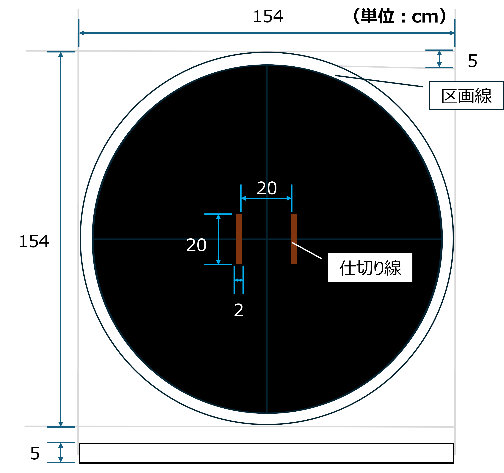
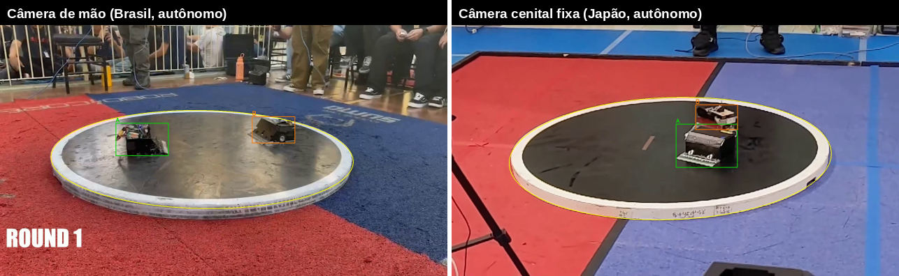
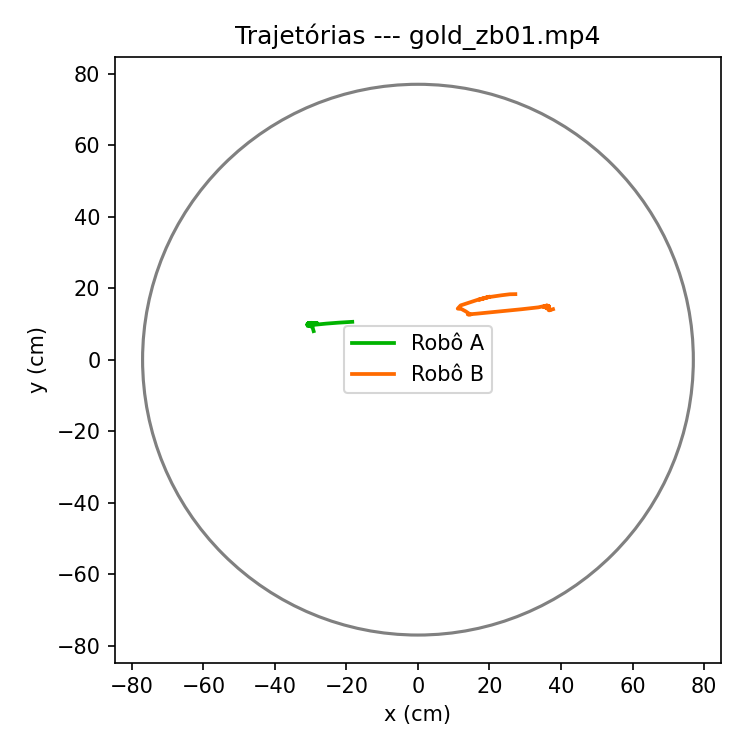
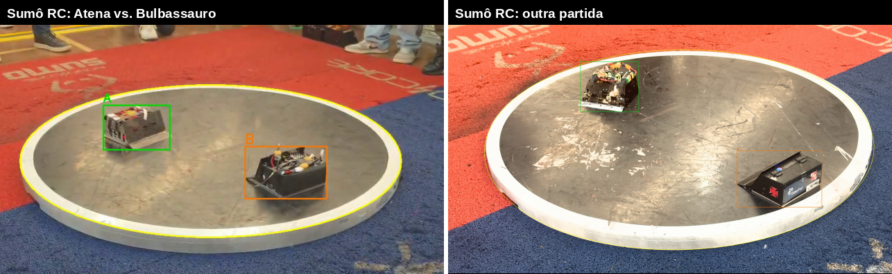

Kanshigan
Uma pipeline de visão computacional para extração automatizada de métricas em partidas de Sumô de Robôs autônomos
Eduardo Barreto
Pedro Henrique de Azeredo Coutinho Cruz · Luan Ramos de Mello · Rodrigo Mangoni Nicola
Instituto de Tecnologia e Liderança (Inteli) — São Paulo
Sumô de Robôs: rounds decididos em menos de um segundo
- Dois robôs autônomos de até 3 kg disputam quem empurra o oponente para fora do dohyo, uma arena circular de 154 cm.
- Modalidade nascida no Japão em 1989 (All Japan Robot-Sumo Tournament); no Brasil, circuito consolidado com RoboCore Experience e IRONCup.
- Sem intervenção humana durante o round: aceleração altíssima e desfecho em poucas dezenas de quadros de vídeo.

Rápido demais para o olho humano — e ninguém mede
Como a análise é feita hoje
Observação humana subjetiva: equipes ajustam estratégia e hardware com base em memória e repetição manual de vídeo. Não existe ferramenta automatizada, dataset estruturado nem métrica padronizada para a modalidade.
O que existe nos esportes humanos
Futebol, basquete e tênis têm rastreamento de jogadores e bola alimentando estatística, arbitragem e treino — mas sobre premissas que não valem aqui: atletas distinguíveis, broadcast multicâmera, eventos em escala de segundos.
Para o Sumô de Robôs, não encontramos na literatura pipeline, dataset ou benchmark publicado.
O que o domínio concentra de problema científico
Quais combinações de detector e rastreador melhor equilibram acurácia e viabilidade prática para rastrear múltiplos alvos visualmente semelhantes, em movimento rápido e não linear, a partir de vídeo não calibrado e sem marcadores?
Colisões e giros quebram a hipótese de velocidade constante
Dois robôs quase idênticos: a identidade vem do movimento
Perder dez quadros custa o round
Câmera de mão oblíqua a cenital fixa
Sobre vídeo gravado, após a luta
Regulamento e acervo não os têm
Cada vizinho cobre parte; nenhum cobre o regime completo
| Trabalho | C1 mov. não linear | C2 aparência uniforme | C3 sub-segundo | C4 vídeo heterogêneo | C6 sem fiduciais |
|---|---|---|---|---|---|
| ByteTrack / OC-SORT (MOT17) | parcial | parcial | — | — | cobre |
| DanceTrack | cobre | cobre | — | — | cobre |
| SportsMOT / SoccerNet | parcial | cobre | parcial | — | cobre |
| Scoring de jiu-jitsu | cobre | parcial | parcial | — | cobre |
| SSL-Vision (RoboCup) | cobre | cobre | cobre | — | não (marcadores) |
| Sumô de Robôs (este trabalho) | cobre | cobre | cobre | cobre | cobre |
Oito estágios, cada um inspecionável e avaliável isoladamente
Decisões-chave: arena por visão clássica (geometria fixada por regulamento, falha diagnosticável); métricas no referencial do dohyo (cancela o movimento da câmera de mão); eventos por regras auditáveis, não classificador treinado.
SAM 3: de candidato a pipeline a anotador validado
- A jornada: o SAM 3 segmenta bem os robôs, mas roda a ~2 FPS com ~7 GB de VRAM — inviável como inferência. Viramos a peça: ele anota o treino; um modelo compacto roda a inferência.
- Multi-fonte de verdade: footage brasileiro (IRONCup, câmera de mão oblíqua) e japonês (cenital fixa). No JP, os limiares padrão do SAM perdiam os robôs pretos pequenos; limiar 0.15 + filtro geométrico recuperou 202 quadros.
- Divisão por round, não por quadro (quadros vizinhos vazariam informação). Gold held-out revisado manualmente, quadro a quadro.
| Subconjunto | Clips | Quadros BR | Quadros JP | Anotação |
|---|---|---|---|---|
| Treino | 14 | 423 | 202 | SAM 3 |
| Validação | 2 | 59 | 15 | SAM 3 |
| Gold (teste) | 2 | 59 | 57 | SAM 3 + revisão manual |
O detector compacto basta — e o recorte foi decisivo
| Detector / fonte | mAP@.5 | mAP@.5:.95 | Precisão | Recall |
|---|---|---|---|---|
| YOLOv8s — gold BR (11,1 M par.) | 0.965 | 0.767 | 0.990 | 0.964 |
| YOLOv8s — gold JP | 0.976 | 0.695 | 0.991 | 0.915 |
| YOLO26n — gold BR (2,4 M par.) | 0.968 | 0.772 | 0.963 | 0.955 |
| YOLO26n — gold JP | 0.993 | 0.691 | 0.986 | 0.976 |
| COCO zero-shot — gold BR | 0.026 | 0.017 | 0.032 | 0.750 |
Ambas as arquiteturas acima de mAP@0.5 = 0.96 nas duas fontes, apesar de câmeras opostas (C4 sustentada).
YOLO26n com 1/5 dos parâmetros empata na prática: a arquitetura compacta melhora viabilidade sem custo mensurável de acurácia.
Recorte no dohyo levou precisão de 0.71 → 0.99: robô pequeno no quadro inteiro não sobrevive ao borrão de movimento.
Aparência não ajuda — e custa 35 a 40× em throughput
| Tracker | Tipo | MOTA | IDF1 | ID sw. | FPS |
|---|---|---|---|---|---|
| OC-SORT | movimento | 0.88 | 0.93 | 1 | 3183 |
| ByteTrack | movimento | 0.89 | 0.94 | 1 | 3448 |
| DeepOCSORT | aparência | 0.86 | 0.92 | 1 | 81 |
| BoT-SORT | aparência | 0.89 | 0.94 | 1 | 94 |
- Desenho controlado: os quatro rastreadores recebem as mesmas detecções (detector fixo) — qualquer diferença é do tracker.
- Por que a aparência não paga: dois robôs pretos quase idênticos oferecem pouco sinal para o ReID explorar; sobra o movimento, que os trackers baratos já modelam bem (hipótese C2 testada, não assumida).
- Honestidade: um único round gold com identidades — o veredito fino de acurácia exige mais rounds; a dominância do motion-only em viabilidade já se sustenta.
Roda no notebook que as equipes têm
Contraste que fecha o argumento: o SAM 3, como anotador offline, ocupa ~7 GB a ~2 FPS — 70× mais memória e 50× menos velocidade que a pipeline de inferência. A divisão "foundation model anota, modelo compacto infere" não é preferência: é o que os números obrigam.
Da caixa delimitadora à métrica de combate



O que os números ainda não sustentam
Limitações (assumidas no paper)
- Gold pequeno (um round por fonte): números indicam ordem de grandeza, não modelo definitivo — sem intervalos de confiança.
- Calibração cm/pixel por escala isotrópica é aproximação sob perspectiva oblíqua; afeta a cinemática, não mAP/IDF1.
- Dos eventos, só o início de round dispara de forma confiável; contato e ring-out exigem conjunto de calibração próprio.
- Caso extremo (final de mundial): blur do combate de elite derruba o detector — falta dado de treino dessa distribuição.
Trabalho até a versão final
- Retificação por homografia da arena → validar cinemática em centímetros.
- Mais rounds gold com identidade → fechar a comparação de rastreadores.
- Conjunto de calibração de limiares → medir contato e ring-out.
- Ampliar base japonesa e broadcast; ablação com RT-DETR.
Três contribuições, todas medidas e públicas
Caracterização do domínio
Seis condições que a literatura só enfrenta em separado, com o recorte científico no par em aberto: aparência uniforme + movimento não linear.
Primeira pipeline aberta
Detecção, rastreamento e métricas para a modalidade — mAP > 0.96, IDF1 até 0.94, >100 FPS em ~100 MB de VRAM, reprodutível em hardware de consumo.
Dataset anotado
Multi-fonte, derivado de torneios reais, com anotador SAM 3 validado contra gold humano (F1 0.96) e protocolo de divisão sem vazamento.
Entrega de meio de percurso, reportada como tal: a detecção está respondida nas duas fontes; o rastreamento, preliminar, fecha na versão final com mais rounds gold.